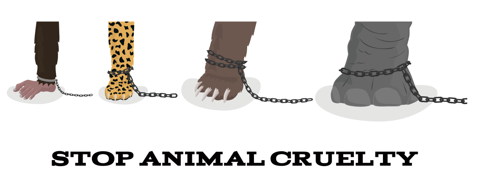

A few years ago, I was employed by McDonald's Corporation and would dress up as Ronald McDonald on "Ronald Day" to visit sick children at a community hospital. These children were suffering from terminal illnesses, and my goal was to bring them some laughter and ease their pain.
Despite the rule of not visiting children alone, as Ronald did, I felt that sometimes nothing could convey love and warmth like a heartfelt embrace.
One day, as I was leaving the hospital, I heard a sad voice calling for Ronald.
I entered the room and met a young boy named Billy, who was confined to a hospital bed and looked weak. I performed magic tricks for him.
However, we talked, and he confessed in me, expressing his worries about his little brother and his dog. Before leaving, I gave my number to his parents and told them to call me if they needed assistance.
Sadly, two days later, Billy's mom called to inform me that he had passed away. She thanked me for making a difference in his life. Later, as I was about to leave Billy's room, he stretched out his arms for a hug, and I couldn't refuse. Breaking the rules no longer mattered as I hugged him in my arms.
Billy's last words to his mom were about the hug, stating that he didn't mind if he couldn't see Santa this year because he had hugged Ronald.
Sometimes there is more to life than building riches. I think if compassions come in. It is indeed more than the worth of everything. It is a priceless possession.
The Marshmallow Challenge is a team-building exercise where teams are given 20 sticks of spaghetti, tape, string, and a marshmallow and have 18 minutes to build the tallest structure capable of holding the marshmallow.
This challenge has been conducted around the world with different groups, and surprising results have been observed. In a study, architects and engineers built the tallest structures, while CEOs performed slightly better than average.
Lawyers and business graduates performed below average, while kindergarteners outperformed most adult teams with their innovative ideas.
Kindergarteners had success due to their immediate action, quick adaptation, and natural collaboration. The challenge teaches that success is not solely determined by age and experience but by taking immediate action, exploring new ideas, and collaborating effectively.
The Marshmallow Challenge is a team-building exercise that involves building the tallest freestanding structure possible using spaghetti sticks, tape, string, and a marshmallow. Here are step-by-step rules for conducting the Marshmallow
Challenge:
**Materials Required:**
- 20 sticks of spaghetti
- 1 yard/meter of tape (masking or scotch tape)
- 1 yard/meter of string
- 1 marshmallow
Once upon a time, there were powerful gods in a big world. One of them was named Prometheus. He made people out of clay!
His brother, Epimetheus, gave special things to animals, but he forgot to give gifts to humans.
So, Prometheus helped us by making us stand tall like the gods.
He also gave us fire to stay warm, cook food, and make things.
But this made Zeus, the king of the gods, very angry.
During a big talk about sharing food with the gods,
Prometheus tricked Zeus to help humans.
Zeus got mad and took away our fire. We were sad and cold without it.
Prometheus felt sorry for us. He took fire from the sun and put it inside a plant called fennel.
Then, he gave it to us so we could have fire again!
Zeus was mad that Prometheus took the fire.
He punished Prometheus by tying him to a big rock.
Every day, an eagle would come and eat his liver, but it would grow back again.
Even though Prometheus suffered a lot, he's remembered as the hero who helped humans stand up tall and gave us fire to start our civilization.
He became “Champion of Humankind”.
The Day of the Dead in Mexico, originating from the Aztecs, is a holiday celebrating death with joy and humor, focusing on remembering happy memories rather than mourning.
It is thought that during these 48 hours, deceased people's souls come back to earth to see their surviving relatives.
Mexicans buy food and supplies in anticipation of their visit, clean cemeteries, repair graves, organize beautiful altars in their homes, and generally get ready for them.
They also purchase the well known marigold flower, which offers a pop of color at night.
Later, family go to the cemetery to decorate their loved ones' graves and light candles in memory of each deceased individual.
Throughout the festival, people dress in skeleton costumes, take part in street parades and performances, and view vibrant, cartoon-like depictions of the dead.
They even bake items decorated with skeletal patterns. It is enjoyable, and I would want to give it a try.
Mexican Day of the Dead and Taiwan's Ghost Festival, both rooted in Taoist and Buddhist beliefs, are annual events honoring departed family and offering sacrifices to wandering spirits during the seventh lunar month.
Celebrating the Day of the Dead is a great event for me, as it allows me to meet my family members and embrace their souls. Some might disagree but I believe that this peculiar event is not something to be afraid of.
I hope that everyone is ready to embrace this kind of culture since this does not harm any personal beliefs. It’s just celebrating a day to remember a family who passed away. Worth remembering and worth to celebrate. All soul’s day everyone!
Kyoto, Japan's capital, is renowned for its natural beauty and history, with cherry blossoms in spring, green leaves in summer, and maple leaves in autumn. If given the chance, I would explore Japan.
Japan is home to historic shrines and temples, including Kinkaku-ji, the Golden Pavilion Temple, and Itsukushima Shrine's Great Torii. The three-story pavilion, covered in gold leaf, is a must-see attraction. The torii's design varies with tides.
Kyoto's unique geishas, skilled entertainers mastering various musical instruments, songs, and literature, offer an authentic local experience for tourists seeking a blend of culture and natural beauty.
This question was asked to me during the class. I would say. I’d like to experience climbing the Mount Fuji. Commanding the Shizuoka skyline, Mount Fuji is the most recognizable natural formation in all of Japan and the seventh-highest peak of an island on Earth. I’d love to reach the peak of the mountain one day and see the breathtaking scenery.
Life is amazing gift to us. I hope that we enjoy every bit of it. Make sure that you only focus on the splendor things that happen in your life. It’s all worth the experience. It may not be important to them, but it is sure a treasure you can keep that no one can steal of.
Japan is known for its Ikebana, or 'way of flowers', art of flower arrangement, dating back to the Heian period. This tradition, also known as kadō, is a must-try for anyone visiting Japan.want to try the magnificent paper folding too. I manifest to go to Japan. See you, Japan! :
The story revolves around the unconditional love and ambition of a brother, highlighting the power of love to inspire mysterious actions, and is inspired by Albrecht Dürer's famous poem, Praying Hands.
Albrecht Dürer's Praying Hands is a tribute to his brother Albert, who sacrificed his own talents to support him. The drawing depicts two labor-stricken hands, symbolizing their mutual devotion. Born into a struggling German village, they decided to support each other through mining.
Albrecht dedicated four years to his passion, while his brother Albert worked underground to fund his tuition. Despite their sacrifices, Albrecht made a name at the academy and returned home triumphant. He draws a prayer hand as a tribute to his brother, feeling sad and fulfilling.
The speaker expresses their commitment to not sacrificing once-in-a-lifetime opportunities for others, stating that they will knock them out and embrace the opportunity. They hope that everyone gets what they always dreamed of when a wonderful opportunity strikes.
I admires Albert's love for his brother Albrecht and would support him in achieving their dreams. The drawing is a visual representation of hands in prayer, but personal sacrifices and choices are subjective. It's up to Albert and his brother to determine what is acceptable in their own lives and dreams.
I’d like to read a letter to Albert
A very smart professor named Dr. Albert. He found something amazing about how we talk to each other! He said that only a small part of how we share our feelings is through the words we say. Can you believe that? Most of the time, about 55% of the time, we show our feelings with how we move our bodies!
Dr. Albert studied how people act and found out that when someone's not telling the truth, they might make stiff movements, touch their face, or their eyes might move in a funny way. Also, did you know that when we really like someone, our body tries to copy what they do without us even thinking about it? We might sit the same way or take a drink when they do.
He also said that when we pay attention to how people move and act, we can understand how they feel without them saying anything! It helps us talk and understand each other better, even if we don't use any words at all!
YOU CAN DO THIS IN A DIALOGUE.
Student 1: Hey, _____!
Do you know about Dr. Albert Mehrabian's idea on communication?
Student 2: No, what's that?
Student 1: He found something cool! He said most of our feelings aren't in the words we say.
Student 2: Really? How then?
Student 1: He says our bodies show our feelings. Like when we're not honest, we might move stiff or touch our face.
And when we like someone, we copy what they do without thinking!
Student 2: That's amazing! So, watching how people move helps us know how they feel?
Student 1: Exactly! Even without talking, we can understand each other.
Student 2: Cool! I'll start paying attention to body language!
Student 1: Yeah, our bodies can speak louder than words sometimes!
It’s amazing how our body can communicate without the words.
The elephant tourism industry in Thailand attracts millions of tourists yearly, bringing economic benefits. However, a dark side exists. Illegal trade captures young elephants, separating them from their herds in cruel ways.
They face violence and abuse to make them obedient for tourist rides, causing immense suffering and health issues. Riding elephants can hurt their backs, and they suffer from inadequate food and water.
Despite tourists' support, this fuels the cruel trade.
To help, avoid elephant tourism companies and visit national parks to see elephants in their natural, peaceful habitat.
Here are some of our campaigns that we want to impart.
"Say No to Elephant Cruelty":
Educate the public about the hidden realities of elephant tourism and the abuse faced by these majestic creatures.
"Choose Ethical Encounters":
Encourage travelers to opt for responsible and ethical tourism practices that prioritize the well-being of elephants.
"Protect Their Natural Habitat":
Advocate for preserving elephants' natural habitats and supporting sanctuaries and national parks where elephants can live freely.

By choosing to be a responsible tourist and watch elephants in their wild settings, travelers can contribute to ending the suffering of these animals. It's time to prioritize the preservation of these gentle giants in their own environment.
TV broadcaster: Live right now at Dajia's Zhenlan Temple during the Mazu pilgrimage. (Reporter Name) and (Reporter Name), ready to interview a group of students who are among the participants.
Reporter 1: Hello, everyone! This is _______ and this is (Reporter 2 Name) reporting live from the Mazu pilgrimage in Taiwan. I'm here to interview some of the students who are participating Mazu.
Reporter 2: It's wonderful to see young participants like you in this journey. Can you share your experiences so far?
Student 1: It's been an amazing journey!
Celebrating Mazu's birthday with such energy and devotion has beenextraordinary.
Student 2: The vibrant atmosphere at Zhenlan Temple before the pilgrimage began was extraordinary! The music, the crowd—it felt like a grand festival. Witnessing the start of Mazu's journey was special.
Reporter 1: Fascinating! Have you all observed any unique traditions or rituals during the pilgrimage?
Student 1: Yes! Some people kneel or lie down as a sign of respect, allowing Mazu's sedan chair to pass over them. It's a unique tradition believed to bring good luck.
Student 2: The locals have been incredibly kind. They offer us free food, places to stay, and facilities to freshen up. Their warmth and support have been heartening.
Reporter 2: Lastly, what does being part of this pilgrimage mean to all of you personally?
Student 1: Participating in this pilgrimage connects us to our culture.
It teaches us about unity, devotion, and the traditions of Taiwan.
Broadcaster: Thank you (Reporter’s name) & students for sharing your experiences! It's inspiring to witness young individuals actively participating in this cultural celebration.
This is (Broadcaster’s name) from Mailiao High School News & studio.
Have a great day!